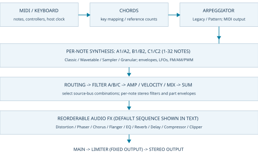

wavelogik · Architecture, DSP and Engineering Reference
Document revision: 2.3 · Software baseline: 1.0.4 · State schema: 4
Implementation baseline: release tag v1.0.4. The technical identity manifest records the CMake/runtime source identity. Native BUILD_INFO records its tagged commit, tree fingerprints, binary hashes and manual identities.
This reference describes the implementation of logisth 1.0.4. It is intended for sound designers, audio engineers, contributors and integrators. The User Manual describes operating the interface; this document explains how its controls affect processing, how data is stored and which open-source components are used. Source paths and measurement reports provide the evidence for implementation-specific statements.
Amplitude 1.0 corresponds to 0 dBFS sample peak. Frequencies are in Hz, times in seconds unless marked ms, pitch intervals in semitones or cents, and normalized positions in [0, 1]. Fs denotes the host sample rate. A voice is a played note; a player is one source slot; a unison lane is one component inside a player.
1. System specification and signal flow
| Property | Implementation |
|---|---|
| Product / producer | logisth / wavelogik |
| Implementation language | C++17; CMake 3.22 or newer |
| Host formats | VST3, CLAP, Standalone |
| Audio buses | No audio input; one stereo output |
| Audio processing | 32-bit floating-point sample buffers; selected calculations/state use double precision |
| Parts / players | Three parts A/B/C; two players per part: A1/A2, B1/B2, C1/C2 |
| Player engines | Classic, Wavetable, Sampler, Granular |
| Note polyphony | 1–32 voices, default 16; mono/legato and portamento available |
| Unison selection | 0–8 lanes per player; 0 disables the player |
| Host parameter count | 1090, including one appended pitch bend input range |
| Modulators | Two modulation ADSRs, two LFOs, four miscellaneous source selectors, two destinations per modulator |
| Performance macros | Four macros, four target assignments each |
| Pattern memory | Twelve pattern slots; sequences up to 32 steps |
| Sound library | 58 factory entries, including Init and 48 separately packaged authored presets |

MIDI first passes through chord mapping and the arpeggiator. The processor renders audio up to each generated event offset before applying that event. Within each note, the six players form three source buses. Each part filter can select any combination of those buses. Its amp envelope, velocity and part mix scale the filtered signal. Solo determines which part contributions reach the common sum.
The default stereo audio order is Distortion → Phaser → Chorus → Equalizer → Reverb → Delay → Compressor → Clipper → Main → Limiter → Output. The eight pre-Main stages are user-reorderable. Chords and Arpeggiator occupy a separate GENERATORS row; Sample and Morph remain editing/performance tools. A new editor opens Sample. Main and the final Limiter are fixed at the output.
The order is a validated permutation of eight stage IDs, packed into one atomic 24-bit value. Each source callback uses one prepared effects state bank. A live change fades down for 5 ms, switches order at zero and fades up for 5 ms. Chunk boundaries also respect this transition. It does not run two parallel effect banks, allocate new DSP state or add reported host latency. The current order travels with presets and DAW state; absent legacy metadata selects the original sequence. Drag, Alt+Up/Down and the context menu share the same ordering API.
Host buffers are processed in chunks of at most 512 frames, further divided at MIDI events. The chunk size is an internal work bound, not an extra block of reported latency. The output limiter and convolution adapter add no host latency. Envelope edge smoothing and spectral windowing have their own response times, described below. The instrument exposes one host program; its richer preset browser is maintained inside the plug-in.
The host tail query reports a conservative 60 seconds, plus IR duration when Convolution is enabled. This is a host rendering allowance, not a promise that every patch produces a 60-second audible decay.
Implementation: PluginProcessor.cpp, PluginProcessor.h, Topology.h.
2. Voice allocation and envelopes
The engine preallocates thirty-two voice records and defaults to a sixteen-note limit. Polyphonic allocation selects an inactive voice first and otherwise steals the oldest voice within the active limit. A voice contains phase, unison, noise, sample, filter and modulation state for all six players. The inner rendering loop visits only the configured voice range. The sixteen MIDI channels retain separate pitch wheel, mod wheel, pressure and sustain state. Mono legato uses the held-key history and portamento logic instead of allocating a new independent note for every key.
MIDI pitch bend is centered at 8192 and normalized with 8192 steps below center and 8191 above. Full travel represents ±100 times INPUT / st in cents (default ±200 cents). The engine clamps the result to ±100 times BEND / st before applying it to oscillator pitch. The built-in wheel uses BEND / st for its full travel. The display tracks the most recent channel's applied bend divided by the limit, and displays center when the limit is zero. The appended bendinputrange parameter defaults to 2 in older saved states.
Every part has its own amplitude ADSR. Every player also has an optional source ADSR. Two additional ADSRs are dedicated to modulation. Logical stages are piecewise linear: Attack rises to one, Decay falls to Sustain, Sustain holds its level, and Release descends from the current value. A zero-duration stage is traversed immediately. With A=D=S=0, the envelope enters silent sustain without emitting a one-sample peak. Mod Env 1 and 2 initialize with all values zero.
Audio envelopes apply two approximately half-millisecond moving averages and a one-sample causal delay. Their positive triangular kernel has unity DC gain and a finite, approximately 1 ms settling tail. This softens zero-time amplitude edges without overshoot. Modulation envelopes retain their exact logical stage values. An amplitude envelope can remain active briefly after the logical release ends so its finite smoothing tail reaches exact silence.
PHASE is a live cyclic offset, smoothed over approximately 5 ms using the shortest wrap-around direction. RETRIG controls note-start phase policy independently; turning PHASE continues to work with RETRIG off. INVERT reverses signal polarity. Changing source engine resets that player's playback state. Init is a plain saw starting patch with Main at 0.65 linear amplitude; at a settled Main value this corresponds to approximately −3.74 dB relative to unity.
Implementation: Envelope.h, Engine.h.
3. Classic oscillator generation
Classic waves are generated mathematically at runtime. They are not recordings. The oscillator maintains a phase accumulator, wraps it into [0, 1), and evaluates the selected waveform. The phase increment is capped at 0.45 cycles/sample.
| Wave | Generation method |
|---|---|
| Sine | sin(2π phase) |
| Saw | Linear ramp with a polynomial band-limited step correction, polyBLEP |
| Pulse | Two-level duty wave with polyBLEP corrections at both edges |
| Triangle | Piecewise linear triangle |
| White noise | Bipolar xorshift32 pseudorandom sequence |
| Half / Quarter pulse | Pulse duty scaled by one half / one quarter |
| Tri-saw | Equal blend of saw and triangle, with the saw discontinuity corrected |
| Pink noise | White noise through a fixed multi-state recursive coloration network |
| Brown noise | Leaky integration of white noise |
| Organ | Weighted sum of the fundamental, second and fourth harmonics |
| Folded sine | sin(3 sin(2π phase)) |
PolyBLEP corrects selected discontinuities. This implementation does not apply global oversampling or guarantee alias-free output under arbitrary FM, phase distortion or high-frequency nonlinear processing. The noise generator uses repeatable internal seeds; noise playback is procedural rather than file based.
For lane spread s in [−1, 1], tuning is:
frequency = 440 * 2^((note - 69 + bend + modulation + tuning + s*detune/100)/12)The detune display spans 0–400 cents with 100 cents at its midpoint. The DSP sums three preserved host parameters: base 0–100, extension 0–100 and wide 0–200 cents. At 400 cents the two outer lanes are −400 and +400 cents from the tuned center. The total outer-to-outer interval is therefore 800 cents, not 400.
BLEND scales the additional unison lanes while retaining a tuned center at zero. For an even lane count, a prepared extra center lane participates while needed for that blend; internal capacity is nine lanes although the selector ends at eight. Gain is normalized by the square root of the sum of squared lane weights. This controls energy across the blend rather than guaranteeing identical peaks for correlated phases. A player needed as an active FM/AM source can still render when its audible level is zero.
Implementation: Engine.h, Parameters.h.
4. Wavetable synthesis
Wavetable mode interprets audio as consecutive complete periodic cycles. A frame is one cycle, not an individual PCM sample. A 128-frame table with 2048 points per frame contains 262144 PCM points. WT POS chooses a frame; oscillator phase travels around that frame while note pitch determines its repetition rate.
Frame sizes are powers of two from 128 to 4096 points. Import accepts an explicit frame size or reads a supported RIFF clm cycle-length hint. Without a hint, a valid power-of-two file of at most 2048 points becomes one frame; other files default to 2048 points/frame. Up to 256 frames are used. Complete frames beyond that cap and the incomplete trailing remainder are not added to the frame set; a file shorter than one selected frame is zero-padded into one frame.
An original radix-2 FFT builds eleven harmonic-limited table levels off the audio thread. The DC bin is removed and progressively higher harmonics are discarded. Playback linearly interpolates points within the cycle and blends neighboring spectral levels according to phase increment. Tables use the first decoded audio channel and are played as a mono periodic source before unison/panning.
Frame selection is explicitly discrete:
frame = round(clamp(WT_POS, 0, 1) * (frame_count - 1))There is no interpolation between adjacent frames in this version. WT POS is smoothed over approximately 10 ms before selection, but movement can still produce discrete frame changes. Individual player destinations and A/B/C, A+B, A+C, B+C and A+B+C scopes allow independent or grouped position modulation. The display reports the selected frame position. WARP applies a sinusoidal phase offset; WIDTH applies the phase remapping described in section 8.
Implementation: SourceData.h, SourceAssets.cpp, Engine.h.
5. Sample playback and interpolation
Sampler mode reads decoded stereo floating-point PCM between normalized START and END points. Root key, note tuning, reverse, looping, source envelope and sample-rate conversion affect its read cursor. Mono imports are duplicated to both channels. File decoding, transient analysis and waveform peak generation run outside the audio callback. The interface accepts WAV, AIFF and FLAC.
| Interpolation | Method and cost |
|---|---|
| Linear | Two adjacent samples; lowest cost |
| Cubic | Four-point cubic interpolation |
| Sinc 16 | Sixteen-tap Blackman-windowed sinc |
| Sinc 32 | Thirty-two-tap Blackman-windowed sinc |
Sinc cutoff is reduced when playback speed exceeds unity. These kernels provide a quality/cost choice; their finite length is not an ideal reconstruction filter. Boundary reads respect the chosen selection and looping behavior.
Whole-selection loops blend across a short end region, normally up to 5 ms and at most one quarter of the selection. Loop Tail first plays the complete selection once, then wraps between separate tail IN/OUT points. Its adjustable crossfade is bounded by one quarter of that loop. Tail bounds remain within the selection and are mapped for reverse playback. They are saved as parameters.
There is no fixed duration cap. The combined imported PCM budget across six source slots is 512 MiB, counting stereo 32-bit PCM at eight bytes/frame. This is approximately 23.3 minutes of one stereo 48 kHz source if no other imported source occupies the budget. It excludes derived wavetable levels, peak caches, decoder temporaries and spectral workspaces, so total process memory can be considerably higher. Source files must be 8–96 kHz, contain at least two frames and finite samples. Imported amplitudes are bounded to [−8, 8].
Implementation: Sampler.h, SourceAssets.cpp, AssetLimits.h.
Trim automation and instance lifetime
The two Sample-page fields attach directly to the selected player's existing automation parameters. Sampler START uses oNposition, granular START uses oNtrimstart and both engines use oNend. The engine switch preserves the independent granular launch position. Each waveform endpoint owns its own host gesture. Captions occupy a rail above playback telemetry.
The audio graph may negotiate a new maximum block size while a MIDI note is held. Preparation rebuilds rate-dependent DSP when the sample rate changes. The VST3 wrapper maps a processing suspension to a processor reset. For a prepared realtime instance, the processor defers that reset. A transition from playing to stopped or a discontinuity in all comparable clocks clears suspended voices. MIDI notes begun without a transport report, or played live while the transport stays stopped, retain their voice state. Audio and incoming events keep their sample offsets during gaps in timing metadata. Offline resets are immediate, and a pending realtime restart clears DSP before an offline bounce renders audio.
MIDI note and pedal ownership is per processor and per channel. Sample decoding runs outside the asset lock. A per-player request counter rejects obsolete imports before publishing audio or switching an oscillator into Sampler. Measurement method
6. Time stretching and the spectral adapter
| Algorithm | Processing behavior |
|---|---|
| Off | Ordinary pitched resampling; Rate changes playback speed |
| Tape | Resampling with the time factor applied to cursor speed; time and pitch remain linked |
| Granular | Overlapping Hann-windowed sample segments |
| WSOLA | Waveform-similarity overlap-add, aligning windows with a normalized correlation search |
| Tonal | WSOLA-family path with a longer automatic window, 65 ms |
| Transient | WSOLA-family path with a shorter automatic window, 12 ms |
| Kick | Original attack/tail hybrid using direct attack playback and a Signalsmith-processed tail |
| Signalsmith Stretch | Upstream spectral time/pitch processor through the prepared streaming adapter |
Granular/WSOLA use a 40 ms automatic window and twofold overlap unless another window/overlap is selected. WSOLA correlation examines 32 points, first searches coarsely within a bounded range and then refines around the best shift. Stereo channels share the chosen alignment. Tonal and Transient are settings of this implementation, not separate third-party libraries or guaranteed source-separation models. The overlapping sampler has sixteen fixed grain records per lane.
The effective time factor is Time Factor divided by Rate, with internal safety bounds of 1/64–64. Rate spans 0.125–8 and Semitones spans −48–48. Rate, pitch, tonality and formant changes are smoothed over approximately 20 ms. Shared controls are applied only where the selected algorithm supports them:
| Control | Effect |
|---|---|
| Rate | Changes source traversal/time factor; Off and Tape retain linked resampling behavior |
| Semitones | Additional pitch ratio 2^(semitones/12) |
| Tonality Limit | Passed to the spectral processor as Hz/Fs; zero selects its unrestricted/default behavior |
| Formant | Spectral formant shift, −24–24 semitones |
| Block (ms) | Custom analysis/overlap window; zero selects the algorithm's automatic window |
| Overlap | Auto or ratios 2–16; controls hop size relative to the window |
The Signalsmith adapter configures two channels and produces 64 output samples at a time, retaining a fractional input-count remainder. Automatic spectral window size is the first power of two at least 80 ms long; automatic hop size is window/8. A nonzero Block setting produces at least 32 window samples and a hop of at least one sample. Transpose factor is bounded internally to 1/256–256. Tonality and formant are passed directly to the upstream APIs after validation.
At note start or source revision changes, the adapter resets/seeks the processor and offsets its input cursor using the upstream input/output latency values. This is sample-instrument alignment, not an advertised general-purpose zero-latency live input stretcher. Windowing and transient behavior remain algorithm dependent. Window, overlap, sample-rate and capacity changes require new prepared streams; they are not allocated in the audio callback.
Kick retains a configurable direct attack of 0–100 ms, then crossfades over 8 ms into its pitched/stretched tail. When a matching prepared spectral stream becomes available, existing playback can crossfade to it over 20 ms. A bounded overlap-add path is available while preparation is pending. Kick is original adapter logic; the spectral tail processor is the unmodified Signalsmith dependency.
Spectral banks have a separate 512 MiB estimated workspace budget. The estimate includes selected players, note capacity, unison capacity and two prepared lanes per cell. This bound does not mean all six players at maximum unison/polyphony can always use every window size. Unsupported memory configurations are rejected instead of allocating without a bound.
Implementation: Sampler.h, Spectral.h, SourceAssets.cpp.
7. Granular synthesis
The dedicated Granulizer uses sixty-four fixed grain records per player/unison lane. A grain has a source cursor, age, attack, hold and alternating stereo pan. Its envelope has linear attack and release around a flat hold. Spawn interval is Hold multiplied by Grain Spacing, bounded to at least one sample; grain attack does not add to this scheduling interval.
Wave Spacing controls how far the scanner advances between launches. Negative values move backward. Freeze stops scanner advancement while existing/new grains continue playing. Randomness perturbs launch position within the selection. An internal sine LFO can modulate spacing; Sync relates scanner traversal to sample beats and host tempo. Reverse changes each grain's read direction.
Key To can address pitch, start position, grain positions or region/transient indices. Region markers come from imported cue points. Automatic transient markers use a simple 64-sample peak-rise detector with a minimum 12 ms separation; this is not a learned onset classifier. Transient modes can snap launches to markers and substitute a dedicated hold duration.
The output uses fixed overlap compensation derived from attack, hold and spawn interval. It avoids a continuously varying active-grain gain controller. If all records are occupied, a launch cannot create another grain. The older granular source path remains available through its model selection and has its own behavior; the dedicated model and sampler's Granular stretch mode are distinct. Waveform cursors and displayed grain markers are telemetry from the newest active voice, not a complete plot of every polyphonic grain.
Implementation: Granular.h, SourceData.h.
8. FM, AM and width modulation
Every player has an internal sine modulator or can select another player as its FM/AM source. External source signals are bounded to [−1, 1] and read from the previous sample. This makes circular routes causal and avoids solving an instantaneous feedback loop. Dependency analysis keeps required muted sources running. Source level, source envelope and output panning do not simply act as the external modulator's gain: the modulation tap is taken from the player's weighted source signal before its audible output gain.
The control labeled FM is implemented as phase modulation:
phase_offset_cycles = FM_index * modulator / (2*pi)
AM_gain = 1 - AM_depth * (1 - clamp(modulator, -1, 1))/2FM index spans 0–8. AM depth spans 0–1 and is unipolar amplitude modulation, not bipolar ring modulation. Internal ratio controls set the sine modulator rate relative to the carrier; when another player is selected, that source has its own tuning. Sample modes translate phase modulation into a read-position offset.
WIDTH/PWM applies to every source type. Duty is bounded to 0.01–0.99. For periodic non-pulse waves and wavetable frames, phase is remapped in two linear segments:
phase < width: mapped_phase = 0.5 * phase / width
otherwise: mapped_phase = 0.5 + 0.5*(phase-width)/(1-width)At width 0.5 this is the identity. Pulse waves move their actual duty edges. Noise uses a softened duty gate. Sampler/granular modes warp local 40 ms read windows. These are source-appropriate width effects rather than identical spectral operations. PWM adds a sine offset to width, optionally tempo synced. FM/AM/width targets can address a single player, a part or part combinations.
Implementation: PhaseWidth.h, Engine.h.
9. Modulation matrix and performance macros
Two modulation envelopes and two LFOs each have two destination/amount routes. Four miscellaneous selectors provide two more routes each: sixteen matrix routes in total. Sources include velocity, key tracking, channel/poly pressure, mod wheel, pitch wheel, part amp envelopes, both modulation envelopes/LFOs, step velocity and unipolar/bipolar per-note random values.
LFO shapes include sine, triangle, saw, ramp, square, quarter pulse, sample-and-hold, smooth random and positive sine/triangle variants. Free LFOs retain common clock phase between notes; other LFOs use voice-local state. Synced rates use musical divisions; free rates use Hz. LFO rate/gain feedback destinations use the previous sample's modulation values. Internal effective rate is bounded to 0.001–200 Hz.
A route adds source multiplied by Amount/10. Targets then apply their own unit scaling and limits. For example, pitch uses 48 semitones per normalized unit, filter cutoff uses 120 semitones, and FM uses eight index units. Individual and group destinations add together. A+B affects only A and B; C and A+C/B+C/A+B+C are explicit scopes. WT POS is independently addressable for all six players.
Effect modulation is monophonic: distortion amount and phaser frequency use the newest active voice's modulation value. It is not six independent effect racks. Four Morph macros each assign up to four From/To target ranges. Macro application maps normalized values through the destination's parameter skew; if multiple macro routes overwrite the same parameter, later evaluated assignments win. Mutate operates on eligible targets with category locks and one-step undo. Macro names, routes and locks are stored with the patch.
Implementation: Modulation.h, Morph.h, PluginProcessor.cpp.
10. Filters, routing and stereo
Each part selects A, B, A+B, None, C, A+C, B+C or A+B+C as its filter input. The three stereo filters are per note, not just one global effect on the completed mix. Each provides low-pass, high-pass, band-pass or bypass; the 24 dB selection cascades two two-pole stages, while 12 dB uses one.
The filter is a topology-preserving state-variable design. Its frequency coefficient is tan(π cutoff/Fs). Drive scales input by 1+12*Drive and applies saturation; Warm chooses tanh instead of x/(1+abs(x)). State saturation also limits the high-resonance condition. The effective cutoff law is:
offset = global_cutoff + 120*matrix_cutoff + (note-60)*keytrack
cutoff = clamp(local_cutoff * 2^(clamp(offset,-180,180)/12), 20, 0.43*Fs)
resonance = clamp(local_resonance + global_resonance + matrix_resonance, 0, 1)Global FILTER CONTROL therefore offsets all three local filters while retaining their relative settings. Cutoff is smoothed over approximately 10 ms.
Unison Stereo spreads noncentral lane groups with separation 2w/(1+w²), where w is the 0–1 Stereo value. Full width sends left and right groups exclusively to their respective channels; a center lane stays centered. Pan shifts the complete group, so full Pan reaches the selected side. Equal-power gains are sqrt((1-pan)/2) and sqrt((1+pan)/2). The engine's final sqrt(2) calibration gives unity per channel for one centered full-scale mono source at unity output settings. No note-count-dependent automatic gain controller is applied.
The sum scope displays L+R, not (L+R)/2. Part A/B/C traces are pre-effect part contributions with Main and live-order transition scaling; the sum is the final post-limiter stereo sum. Do not interpret part traces as isolated post-effect stems. The separate player scopes are pre-filter traces. Stereo measurements are in the report linked in section 18; width does not guarantee a fixed correlation for every source/phase.
Implementation: Engine.h, Stereo.h, Gain.h, PluginProcessor.cpp.
11. Chords, arpeggiator and MIDI
Chord mapping contains 128 key assignments with up to eight output notes each. Overlapping held chords use note reference counts, so releasing one trigger does not stop a note still owned by another trigger. Built-in chord types and learned mappings can be edited and stored in the patch.
The Legacy arpeggiator supplies ordered, alternating, random, played-order, step and chord behavior. Pattern uses independently sized Note, Octave, Velocity, Gate/Tie, Repeat and Chance lanes, each up to 32 steps. Repeats subdivide a step up to four times. Gate is relative to the resulting repeat interval. Chance uses the engine's repeatable pseudorandom generator. Swing alternates long/short step durations. Latch, sustain and transport changes affect retained notes; disable/reset paths emit the appropriate releases. Graphs mode is not exposed.
With Sync, step duration follows tempo and division; otherwise it follows a time value. Host transport position informs stop/seek handling. Generated MIDI can be routed to the host. Actual availability of an instrument's MIDI output depends on host routing support. MIDI-only mode retains chord/arp/controller processing but skips synth audio and effect rendering. Switching modes clears existing voices/effect state so hidden audio voices do not accumulate.
Fixed MIDI Velocity, off by default, forces Note On velocity to one for synthesis and generated MIDI. It is patch/instance state, not an appearance-only setting. Incoming MIDI is handled with sample offsets; parameter snapshots are collected per process call, so this does not assert sample-accurate host automation of every parameter.
Implementation: Chords.h, Arpeggiator.h, ArpTypes.h.
12. Effect rack and reverb
| Stage | Implementation |
|---|---|
| Distortion | Four serial modules in Legacy, or 1–4 parallel bands with LR24 crossovers; tanh/folding/clipping/hold/quantization |
| Phaser | Six all-pass stages per channel, LFO frequency sweep, feedback and width |
| Chorus | Fractional delay modulation with stereo phase offsets; optional dual lines and feedback |
| Legacy EQ | Two corrected second-order shelving filters: bass and treble |
| Graphic EQ | Sixteen independent biquad slots with frequency, gain, Q, type and enable |
| Reverb | Five original algorithmic models or prepared JUCE convolution |
| Delay | Stereo fractional delay, separate L/R times/divisions, feedback filtering, smear, ping-pong and width |
Distortion slot 1 retains the original Type/Drive/Mix and its modulation target. dist1on defaults on; the group master retains its existing bypass behavior. Three further slots each append On/Type/Drive/Mix, default disabled. DistortionOrder is a validated 8-bit permutation of four identities. Factory Init uses 1/2/3/4. Presets/projects save it as optional distortionOrder metadata; missing metadata uses the original order. Invalid metadata rejects the patch before publication. Each stage owns independent hold counters, stereo memory and smoothing. The selected order drives actual serial processing. Reordering uses the same 5 ms down/switch/5 ms up policy as the outer rack, without duplicate banks. Disabled or zero-Mix stages are skipped; all-disabled groups bypass without distortion work.
Optional Multiband routing reuses those four module identities as parallel frequency bands. Five host parameters are appended after the preceding 1084: distbandmode (Legacy/Multiband, default Legacy), distbands (four choices, default four), and distcross1/2/3 (20–20000 Hz, defaults 200/2000/8000 Hz). Legacy calls the original serial rack unchanged. A one-band parallel configuration has no split. Order maps the first N identities to ascending bands; the remaining modules are preserved in state but excluded from activity and rendering.
Each split uses fourth-order Linkwitz–Riley low/high paths: two cascaded second-order Butterworth filters implemented with TPT state-variable integrators. Lower bands pass through second-order allpasses for all subsequent splits. This aligns phase at recombination: the summed linear signal has unity magnitude, with frequency-dependent phase rather than dry-signal identity. The filters add no fixed block/host latency. Stereo channels have separate state and identical coefficients. Cutoffs are bounded below 0.45 Fs and maintain 3% ascending spacing; nonfinite inputs use defaults. A 15 ms logarithmic smoother updates coefficients every 32 samples. TPT state preserves DC while coefficients move.
Band enable and dry/filtered blend use approximately 10 ms smoothing; bypassed bands pass their clean frequency region. All-off settles to exact dry bypass. Mode, count, model and assignment changes use a 5 ms down/switch/reset/5 ms up transition. Only the active N band processors run. Inactive slots cannot wake Distortion. Its remaining transition is included in idle detection, and silence clears filter state. The original module-1 modulation target follows module 1, including reassignment to another band. This is host-rate nonlinear processing; no new oversampling or true multiband modulation matrix is claimed.
A dedicated preallocated four-lane ring captures Distortion's actual pre/post position in the reorderable chain. Its analyzer reuses EqSpectrum and the shared SpectrumPlot drawing helper, with independent mode/tilt preferences. Capture is requested only for a visible Multiband graph with analysis enabled. FFT and plot response calculation stay on the GUI thread. Audio capture uses two fixed 512-frame member arrays, with no callback allocation or file access. See MULTIBAND_REVIEW.md for reconstruction and transition data.
The EQ analyzer taps full-rate L/R immediately before and after its current position in the movable effects rack, including bypassed EQ. Four atomic ring lanes carry pre-L/pre-R/post-L/post-R. Audio only copies samples; a GUI-side 2048-point radix-2 FFT applies a periodic Hann window. One-sided amplitudes are normalized by the window sum (DC/Nyquist have no doubling). The trace averages L/R power before 10 log10, avoiding antiphase cancellation. A bin-centered full-scale stereo sine is 0 dBFS; doubling it gives +6.0206 dB. Attack/release smoothing is visual. Display tilt is 1.5 * choice * log2(f/1000), choice 0–4. It does not alter audio coefficients. Off or a hidden/closed EQ view disables capture and FFT work. The response curve remains available with the analyzer off.
Graphic EQ types are Bell, Low shelf, High shelf, High-pass, Low-pass, Notch, Band-pass and All-pass. Frequency spans 20–20000 Hz, gain −18–18 dB and Q 0.1–20; coefficients additionally respect the host's Nyquist region. Ten slots start enabled and six are available to add. Gain/frequency/Q smoothing uses about 15 ms; type changes crossfade over about 20 ms. The graph evaluates the same coefficient model used by processing. Auto Gain estimates the largest boost over 96 log-spaced frequencies and compensates it; it is not a loudness meter or an LUFS normalization process.
The algorithmic reverb family uses sixteen delay lines with an orthogonal Householder feedback transform, stereo injection/output signs, input diffusion, damping and DC control. Size changes line lengths; Decay derives feedback gains from a nominal 60 dB decay target. Decay spans 0.2–20 seconds. Character controls and nonlinear behavior can change the measured decay envelope.
| Model | Distinguishing processing |
|---|---|
| Hall | Longer feedback delays and subtle delay modulation |
| Room | Shorter delays with explicit stereo early-reflection taps |
| Spring | Additional dispersive all-pass stages in the feedback paths |
| Vintage | Modulated delays, restricted high-frequency response and feedback saturation |
| Shimmer | Windowed pitch-shifted feedback injection; pitch −12–24 semitones |
| Convolution | Stereo partitioned FIR driven by an imported or factory impulse response |
These five characters share an original network design. Spring is a dispersive digital model, not a physical mechanical simulation. Reverb Dry/Wet uses an equal-power cosine/sine crossfade; Wet Gain supplies −24–24 dB. Model changes crossfade, running the old and new engines while required. Turning Reverb off clears its tail.
Convolution uses JUCE dsp::Convolution::NonUniform{256}, prepared for stereo, 512-frame work chunks and zero added latency. Mono IRs are duplicated; stereo IRs apply left-to-left and right-to-right convolution, not four-channel true stereo cross-convolution. Trimming and JUCE's built-in normalization are disabled. The logisth Normalise option measures the actual prepared/resampled response and uses 1/sqrt(max(left_energy,right_energy)), capped at 1e6. It is energy normalization rather than peak normalization. Gain changes are smoothed.
The stereo review decodes real WAV fixtures and compares the complete reverb stage against direct L/R FIR reference convolution: 48 cases combine three rates, mono/asymmetric-stereo IRs, independent/left-only/right-only/antiphase inputs and normalization on/off. Two further cases render the actual sampler through IR and Main. The recorded maximum sample error is approximately 1.04e-7; the guard threshold is 2e-5. C++ allocation guards cover audio processing. This validates lane mapping, polarity, shared normalization and default Width=1, Predelay=0; it is not an acoustic quality comparison for arbitrary recorded IRs.
IR file rates span 8–192 kHz. The 32 MiB stereo PCM budget must fit both the source and its host-rate resampled length; convolution preparation accepts host rates 8–384 kHz. This bound excludes FFT partitions and other engine overhead. New prepared engines crossfade over about 100 ms. The waveform uses 512 cached min/max bins per channel. IR drag/drop imports asynchronously and its PCM is embedded in saved patches. The included chamber IR is generated by original project code rather than an external recording collection.
Implementation: Effects.h, Distortion.h, EqSpectrum.h, Equalizer.h, Reverb.h, ImpulseReverb.cpp.
13. Compressor, clipper and final limiter
Modern compressor. The linked detector is max(abs(L),abs(R)). Reduction is computed in dB, smoothed with separate attack/release coefficients, converted to linear gain and applied equally to both channels. Threshold and ratio govern steady-state response; Knee spans 0–24 dB, Makeup −24–24 dB, and Mix supports parallel compression. For input level I, threshold T, ratio R and knee K:
x = I - T; slope = 1 - 1/R
K = 0: reduction = max(0,x) * slope
x <= -K/2: reduction = 0
x >= K/2: reduction = x * slope
otherwise: reduction = slope * (x + K/2)^2 / (2*K)
coefficient = exp(-1/(time_seconds*Fs))The curve and its first derivative are continuous across the soft-knee joins. Legacy smooths the amplitude detector before calculating hard-knee reduction; its Knee control is inactive. States missing the new compmode parameter restore Legacy; newly initialized instances use Modern. The panel plots the transfer function and actual input/output waveform, peaks and reduction.
Clipper. Hard clips to ceiling amplitude C. Soft adds a quadratic transition with half-width w=C*Knee: below C−w the positive curve is linear; above C+w it is flat at C; between them it is a−(a−(C−w))²/(4w), with sign restored. Drive spans 0–24 dB, Ceiling −24–0 dBFS, Knee 0–1, and Mix 0–1. At partial Mix the dry component can exceed the clipper ceiling, so the clipper is not a final ceiling guarantee for parallel operation. Later rack stages and Main can also raise levels after the Clipper.
Antialiased quality applies first-order antiderivative antialiasing, ADAA:
wet[n] = (F(x[n]) - F(x[n-1])) / (x[n] - x[n-1])F is the analytic integral of the selected curve. A small-difference fallback evaluates the midpoint to avoid cancellation. This reduces certain aliases without an oversampling buffer. Wet has approximately half a sample of phase lag while dry remains the original signal; no host latency is reported. Direct quality remains available. Bypass and Mix=0 are exact bypass paths.
Limiter. The final limiter follows Main, so changing Main cannot bypass its ceiling. It links channels by their maximum absolute sample, applies immediate required gain reduction and exponential release, then clamps actual output samples to the ceiling. Drive spans 0–24 dB, Ceiling −24–0 dBFS and Release 5–2000 ms. It is a sample-peak limiter with no lookahead or intersample true-peak detector. It does not guarantee a ceiling after downstream sample-rate conversion or reconstruction. Hard instantaneous control can generate distortion; release and drive affect that tradeoff. The display shows reduction history and activity.
Implementation: Dynamics.h, DynamicsViews.h.
14. Real-time execution and memory ownership
| Context | Responsibilities |
|---|---|
| Audio callback | MIDI scheduling, prepared DSP, fixed-size scratch buffers, atomic telemetry publication |
| Import/preparation worker | File decoding, tables/markers/peaks, sample and IR state work, spectral preparation |
| UI/message thread | Controls, rendering, dialogs, theme scanning and requesting work |
| Host state callbacks | Bounded state serialization/restoration; do not call these heavy operations from a real-time audio loop |
Source PCM, table data and IR descriptions are immutable after publication. Prepared spectral/convolution engines are published through stable ownership structures. Retired source data and convolution engines remain alive while audio can reference them and are destroyed outside processing. Large voice resets copy a prepared heap record instead of constructing nested arrays on a small audio thread stack. An integration allocation guard covers actual processor callbacks. This is evidence for tested paths, not a guarantee about every host/wrapper call.
CPU control includes direct bypass of a disabled effects rack and a quiet gate for enabled empty/tail-complete processing. The gate accounts for the sum of serial first-response times, including IR duration, pre-delay and Delay time, avoiding sleep before a combined late first echo in either order. Compressor recovery and effect LFO clocks advance while idle. Idle synth LFO phases and random-wrap ordering also continue.
Active oscillator dependencies are resolved before rendering, including transitive FM/AM dependencies and smoothed nonzero depths. Unrelated muted players skip waveform work. Part C is activated only when required. MIDI-only mode bypasses all audio generation. Reverb configures selected/fading models; disabled EQ bands skip their active filter work. Not every enabled DSP block becomes cost-free just because its audible contribution is low.
Meters/scopes use bounded rings and atomics. Only the selected dynamics page captures its waveform/activity trace. IR drawing reads cached peaks rather than scanning millions of samples every GUI frame. Actual CPU still scales with note polyphony, unison, interpolation kernels, spectral windows and active tails.
Implementation: Engine.h, Effects.h, Telemetry.h, SourceAssets.cpp.
15. Presets, state and appearance files
The processor stores a JUCE ValueTree named LogisthState, serialized as JUCE binary XML. Current schema is 4. A .logisth preset uses the same bounded state model and contains parameter IDs/values, preset metadata, macro metadata, patterns, chord mappings and imported assets. It is not a WAV file or a ZIP archive. Preset writing uses a temporary file and replacement on success.
| Item | Storage / behavior |
|---|---|
| Parameter values | PARAM children with stable id and numeric value |
| Preset name / comment | presetName up to 128 characters on restore; editable presetComment up to 4096 |
| Source asset | SOURCE child with slot, regions and compressed stereo float PCM, source rate, frame size and name |
| Impulse response | IMPULSE child, format 1, compressed PCM/rate/channels/name |
| Chords / patterns | CHORDMAP/CHORD data and stored PATTERN trees |
| Audio effect order | Optional root effectOrder, eight 3-bit stage IDs packed into 24 bits; duplicates/unknown bits rejected |
| Appearance | Separate appearance.json, theme JSON files and per-instance draft state |
Factory source data can be reconstructed instead of embedding an identical factory blob. Imported samples and IRs travel with the patch, so loading a saved patch does not depend on the original file path. Decompression, size, finite-value and format checks precede asset publication. Total host/preset state is limited to 1 GiB, independently of the individual asset budgets.
Asset compression/decompression uses JUCE's GZIPCompressorOutputStream and GZIPDecompressorInputStream; the stream is stored as binary data inside the ValueTree. Use the project's reader/writer for this payload rather than treating it as a standalone audio file.
The 1055-entry v0.9.6.1 host contract freezes IDs, ordering, ranges, defaults, integer flags and choice lists. The full 1070-entry v0.9.6.2 contract is also frozen. Version 0.9.7 appends polyphonyextra (0–16, default 0). Effective POLY is the preserved 1–16 base plus this extension, bounded to 32. The editor presents one 1–32 numeric control and publishes gestures to the two host parameters. Composite numeric/menu attachments cache their incoming values instead of re-reading an APVTS raw adapter that may still contain the preceding event. This also prevents one-update-late detune and extended destination displays. Old automation and presets with zero extension retain their previous values. The subsequent thirteen distortion controls are appended after polyphonyextra; all 1071 earlier definitions remain intact. The next five multiband parameters are likewise appended, preserving all 1084 earlier indices and IDs. Spectral preparation, readiness and voice indexing use the same effective count. Restoration clamps values, handles non-finite numbers and rounds discrete controls. Missing fields use defined compatibility defaults; compmode, arppattern and granular model selections have explicit legacy fallbacks. The audible Init patch can differ from raw parameter declaration defaults because initialization loads the factory Init state.
Default user presets live under the system user application-data directory in logisth/Presets; the browser supports a user-selected folder and search. Themes live in a configurable logisth/themes folder. Version-2 theme JSON specifies twelve colors, font family, background style and knob style. Files are scanned every two minutes, with a manual rescan option. Theme files above 64 KiB or with invalid fields are ignored; scanning is not recursive.
Appearance stores the selected saved theme, last window dimensions and accepted 80–200% scale. The message-thread MODULATION disclosure hides the complete modulation row without touching parameter attachments or DSP state. Logical height changes from 860 to 640, the keyboard/footer shift up by 220, and the host editor receives an actual resize. The active aspect ratio and resize bounds are updated together. appearance.json stores modulationCollapsed alongside width, height and the exact typed scale; old preferences default to expanded. Twenty generated PNG originals are embedded in a separate artwork resource library. A selection decodes only that image on the message thread; the original compressed bytes are embedded in saved themes through the existing version-3 backgroundImage field. The palette, font and logos are independent of this choice. No image data is allocated or decoded on the audio thread. Unsaved edits survive editor close/reopen/minimization within the same instrument instance, but must be saved as a theme to survive destroying that instance. Sound presets do not replace theme, scale or window size. Font data is embedded in the plug-in for its bundled families; custom family names require an installed font or fall back on the destination system.
UserSettings.h stores font size (80–125%), style (theme/regular/bold/italic/ bold italic), glyph antialiasing, quality (Native/grayscale/2x/4x), edge weight (0.5–2), analyzer mode/tilt and successful chooser folders in logisth/preferences.json. Access is locked and restricted to GUI/ import threads; writes use a temporary file and replacement. Folder paths are excluded from sound presets. Removed paths resolve to an existing ancestor. Separate preset-open/save, shared six-player sample, IR and library paths survive instances. Failed imports/loads do not replace remembered directories.
Font sizes are derived from stable base sizes to avoid cumulative scaling. TextRendering.h intercepts shaped glyph draws, including editable text, while forwarding vector operations directly to the original graphics context. The old full-console image cache and low-quality bitmap resampling are removed. The editor uses one uniform scale despite integer window-size rounding. These changes avoid second-stage text resampling, aspect distortion and stale transparent text.
Native mode retains platform hinting at neutral weight. Grayscale uses a software outline mask; 2x/4x modes rasterise only glyph masks at that multiple of physical resolution, then average coverage to physical pixels. Default quality is 2x. Edge weight applies coverage^(1/weight) through a per-paint 256-entry lookup; weight is 0.5–2 (neutral 1). Off thresholds adjusted coverage to 0/255. Native with adjusted weight uses grayscale. Curves/knobs are unaffected. Shaped glyph positions and fallback typefaces are retained; glyphs without outlines use the native renderer. Synthetic italic slants outlines when an italic face is absent. Popups/tooltips use the same settings. Work stays on the GUI thread; dirty-region repaints continue through JUCE without a full-window backing image.
Theme format 3 embeds optional original PNG/JPEG bytes as base64, plus image mix and panel opacity. Optional gradientAmount and gridOpacity are finite 0–1 values, default 0.75 in older files. Gradient composition affects the canvas, panel shells and central screen; grid opacity scales its line layer, with exact off at zero. Slider previews repaint existing controls without rebuilding layout or attachments. Input is bounded to 16 MiB / 4096 x 4096; image headers are checked before decoding. The selected image is decoded on palette/image changes, not in paint/audio callbacks. It is cropped to the canvas and composited under panels. Grid and non-flat panel transparency are effective within the panels; flat factory palettes retain opaque panels. JSON scan size accommodates the bounded base64 payload, and content stamps use compact hashes. Versions 1/2 remain readable. FILES directory selection is an application preference; library changes refresh the preset browser. Context popups bind the owning look-and-feel explicitly instead of using the application default.
Physical glyph masks are coloured in software and drawn as small RGBA images. This avoids native alpha-clip bitmap brushes that can re-filter masks. Every vector primitive, including optional native fast paths for ellipses, rounded rectangles, strokes and thick lines, is forwarded explicitly to the original context. Default fallback implementations must not replace native geometry.
The exact owner-provided SVG is embedded through BinaryData and tinted on palette changes. Standard headers use the smaller mark with no adjacent wordmark; the footer identifies manufacturer/product/instrument. AP bitmap bytes and logo geometry remain unchanged.
Knob colors are prepared on palette/style changes for normal and screen contexts. Screen knobs use that screen's actual surface, including under Light. Cached needle colors target at least 4.5:1 relative-luminance contrast against both face gradient endpoints; enabled arcs/tracks target 3:1 against their surrounding surface. Extremely contradictory custom gradients can have no color meeting both endpoint targets; the fallback chooses the better black/white direction. Standard themes pass all tested contexts/styles. Primary screen plot accents are also prepared for at least 3:1 contrast on the screen surface. This is a component contrast check, not a certification of the entire interface. Rendering does not modify the supplied theme files.
Implementation: PresetLibrary.cpp, SourceAssets.cpp, UserSettings.h, TextRendering.h, THEMES.md.
16. Open-source components and licenses
| Component | Role | License / provenance |
|---|---|---|
| Original logisth code and documentation | Synth engine, adapters, algorithms, UI and tools | MIT; wavelogik |
| JUCE 8.0.6 | Host wrappers, UI, audio/file utilities and convolution | AGPLv3 or commercial JUCE license; upstream module notices apply |
| clap-juce-extensions | CLAP wrapper integration | MIT; commit pinned below |
| CLAP | Plug-in ABI/headers used by the wrapper | MIT; submodule revision selected by the pinned wrapper |
| Signalsmith Stretch 1.3.2 | Spectral stretch/pitch engine, also used by Kick | MIT; unmodified vendored headers |
| Signalsmith Linear 0.6.6 | FFT, STFT and supporting linear operations for Stretch | MIT; unmodified vendored headers |
| Open Sans Regular/Semibold | Embedded interface/document font | Apache-2.0 |
| Ioskeley Mono Term Nerd Font Mono 2.2.0 | Embedded Regular/Bold theme fonts | SIL OFL 1.1; upstream font notices retained |
| VST3 SDK within the JUCE dependency | VST3 wrapper interfaces | Its bundled SDK license and notices remain applicable |
Pinned source revisions:
JUCE
51a8a6d7aeae7326956d747737ccf1575e61e209
clap-juce-extensions
6bde108329ff9fc24404b79b8b397261a75cf6a8
Signalsmith Stretch
88061fd4eda56a2353c5d65c74aa3f4ccf76f9da
Signalsmith Linear
7bb1c8f36794d6980080ce817c91f8da8fe56a66The portable Signalsmith implementation is used by the current project build; optional platform backend headers in the vendored tree do not mean those external backends are enabled or separately linked. The wavetable FFT, filters, granular/WSOLA paths, character reverbs, equalizers, dynamics, MIDI sequencing and Kick attack/tail adapter are original project implementations. JUCE supplies the convolution engine; logisth supplies its preparation, gain, state and UI adapter.
Original-code MIT does not relicense JUCE, SDKs, fonts or other dependencies. Binary distribution must satisfy the selected dependency licensing route and retain the required notices. This document does not establish possession of a commercial JUCE license. Optional VST2 requires a separately obtained licensed SDK; it is disabled in public builds and is not bundled.
The optional AP skin artwork was supplied for this project and has its own permission notice in the licenses directory. It is not a DSP dependency or a font package. Existing asset permissions are retained independently of source code licensing.
Full texts and provenance: THIRD_PARTY_NOTICES.md, licenses, font notices, UPSTREAM.json.
Upstream projects: JUCE, CLAP wrapper, CLAP, Signalsmith Stretch, Signalsmith Linear, Ioskeley Mono.
17. Build, validation and release engineering
An ordinary build requires Git, CMake 3.22+, a C++17 compiler, Python 3 and platform audio/window development libraries. CMake fetches pinned JUCE and CLAP wrapper sources. Header-only core DSP tests can be built without the plug-in framework:
cmake -S . -B build-core -DLOGISTH_PLUGINS=OFF -DBUILD_TESTING=ON
cmake --build build-core --parallel 2
ctest --test-dir build-core --output-on-failureFor full native packaging use the checked-in script on the target operating system, after installing the dependencies listed in README and the workflow:
python scripts/build_native.py --platform linux-x86_64 --output native-out
python -m unittest discover -s scripts/tests
python scripts/audit_algorithms.py
python scripts/verify_theme_assets.pyUse windows-x86_64 on Windows or macos-universal on macOS. The macOS build sets arm64+x86_64 and deployment target 11.0; tests execute on the CI runner's native architecture, and every packaged Mach-O binary is checked for both slices. This does not claim separate native test execution on both architectures. Windows uses an x64 toolchain. Linux packages are x86_64; BUILD_INFO records the actual required glibc version. Windows is unsigned and macOS ad-hoc signed, not notarized. Public packages contain VST3, CLAP and Standalone. The standard Windows system folders are C:\Program Files\Common Files\VST3 and C:\Program Files\Common Files\CLAP. The user manual lists system/user locations for all three operating systems; whole bundles must remain intact.
| Validation area | Evidence |
|---|---|
| Core DSP | Engine, modulation, arp, hybrid/sample, studio, reverb, stretch, Part C, tail loop, unison, EQ, stereo and dynamics suites |
| Historical audio | Frozen mono A/B capture comparison |
| Host parameters | Complete frozen 1055-definition comparison and appended controls |
| Processor / UI | Real callback, state, bounds, control bindings, asset loading, IR drop, dynamics and allocation checks |
| Native loading | VST3 multi-instance playback on all platforms and CLAP binary playback on Linux |
| Memory diagnostics | Separate Windows AddressSanitizer build/test run |
| Dependency identity | Vendored SHA-256 manifest and upstream source comparison |
| Release contents | Architecture, source fingerprints, SHA-256, license/font/theme/manual presence |
The native release requires 20 Linux suites, 19 Windows suites, 19 macOS suites and 19 suites in the separate Windows AddressSanitizer run, with no skipped or failed suites. Linux also hosts the CLAP binary. It is not a count of assertions or a certification for every DAW. Rack adds all 40320 order permutations, three-rate comparison against frozen prior FX code, noncommuting signal fixtures and combined IR/Delay gaps. Processor integration adds real pointer/keyboard ordering, metadata, 32 notes and prepared streams, allocation/ceiling checks, Sample startup, layout and 120 theme/context/style/trim renders with actual needle-pixel measurements.
Release scripts package committed source and documentation, then build native artifacts from the release tag. BUILD_INFO records version, source commit/tree fingerprints, test totals, binary architectures and hashes. Windows/Linux publish first; only afterward does macOS build and append to the same release. Public downloads are checked against SHA256SUMS; published tags and existing binary assets are preserved. Dependency pins improve traceability but do not by themselves guarantee bit-for-bit identical builds across different toolchains. BUILD_INFO also records the technical manual's identities and checks them during artifact reuse, preventing a reused archive from silently retaining an older reference.
This manual is maintained beside the source. python scripts/build_manual.py renders the user and technical PDFs using ReportLab. Every subsequent release must update the software baseline, review changed sections and regenerate both PDFs. Source/native packages include this Markdown/PDF pair; release packaging also publishes them as separate downloads. Documentation-only updates can be pushed without changing the already released audio binaries or version tag. The technical identity manifest hashes CMake/runtime sources and Markdown with canonical LF newlines, and hashes the PDF's exact binary bytes. It detects a stale generated reference while remaining portable across Git newline settings.
Implementation: CMakeLists.txt, build_native.py, build workflow, DEVELOPMENT.md.
18. Measurements, limits and source index
Unity calibration uses one centered full-scale sine, unity player/part/Main levels, full velocity, filter bypass and effects off. It reaches 0 dBFS peak per output channel. Ordinary patches may be quieter or louder because of Main, velocity, envelopes, phase, filters, layering and effects. Default Main 0.65 is intentional; the limiter is optional rather than an unconditional output AGC.
The v0.9.6.1 stereo report measured approximately 0.003 L/R correlation and −0.03 dB Side/Mid ratio for its specified eight-voice detuned saw fixture at full width. At zero width the tested mono source is exactly mono. These values are fixture-specific, and that report remains identified with its measurement version.
The v0.9.7 CPU comparison against v0.9.6.2 used Linux x86_64, C++17 -O2, 48 kHz, 512-frame blocks and medians of seven rounds of 128 blocks. All six compared fixture checksums match. Examples include 280.366 to 228.784 microseconds/block for the zero-depth muted-source fixture, 553.337 to 486.484 for an active muted FM source and 261.679 to 224.368 for a note following idle with free LFOs. Idle/bypass rows are near the timing floor. These fixed cases isolate specific work; they are not a universal speedup or total DAW CPU claim.
The documented ADAA fixture measures one folded harmonic approximately 6.64 dB lower than Direct. It does not describe all aliases or every signal. Compressor and clipper CSVs plot the same static functions used by the engine and UI. Factory bank validation renders 96 profiles for the 48 authored presets and records peaks/levels; it does not guarantee safe peaks under every future performance.
Reproduce core curve data with the CMake dynamics_calibration executable and CPU fixtures with cpu_calibration. Additional gain/factory/kick exports are provided by processor_tests; see the linked reports for arguments and conditions.
| Reference | Contents |
|---|---|
| CALIBRATION.md | Gain reference, conditions and exported audio |
| ANTICLICK.md | Amplitude edge treatment and regression approach |
| STEREO_REVERB_CALIBRATION.md | Width and reverb before/after measurements |
| DYNAMICS_CPU.md | Dynamics formulas, ADAA fixture and CPU method/raw CSV links |
| PROJECT_REVIEW.md | Algorithm identity and integration review |
| ALGORITHM_AUDIT.json | Machine-readable dependency/conformance record |
| FACTORY_PRESETS.md | Authored bank categories and performance controls |
| INTERFACE.md | UI organization and layout conventions |
| MULTIBAND_REVIEW.md | LR24/TPT reconstruction, band isolation, Legacy parity, routing transitions and appearance evidence |
| GUI_DSP_REVIEW.md | Working-tree distortion, spectrum, stereo, font/folder and logo evidence |
| RACK_REVIEW.md | Ordered DSP, 32-note capacity, host refresh and ten-theme contrast evidence |
| Source | Runtime implementation and vendored headers |
| tests | Core, processor, allocation and binary checks |
| scripts | Audit, documentation, packaging, publishing and verification |
Practical boundaries are explicit: discrete WT frames; finite interpolation and anti-aliasing methods; bounded grains/workspaces; a stereo output without audio input; no exposed Graphs arp; no intersample true-peak limiter; host-dependent MIDI output routing; and no claim of exhaustive host/hardware coverage. Inspect the release tag matching a binary when investigating a specific implementation.
Documentation history
| Revision | Software baseline | Change |
|---|---|---|
| 1.0 | 0.9.6.2 | First consolidated engineering reference; architecture, algorithms, dependencies, state and release evidence |
| 1.1 | 0.9.7 | Reorderable FX, saved order and live fade, 32-note capacity/default 16, additive host control, serial idle horizons, contrast-aware skins and expanded validation |
| 1.2 | 0.9.8 | Four-stage distortion, pre/post stereo-power FFT, categorized settings, glyph AA/size/style, persistent dialogs, exact SVG branding and real-WAV stereo checks |
| 1.3 | 0.9.8.1 | Direct glyph rendering, selectable AA/supersampling and edge weight, uniform scaling, portable PNG/JPEG/grid backgrounds, folder controls and themed context menus |
| 1.4 | 0.9.8.2 | Collapsible modulation row with actual editor resize and persistent compact state; 20 embedded original backgrounds |
| 1.5 | 0.9.8.3 | Optional 1–4-band LR24/TPT distortion, graphic crossovers/pre-post analysis, five appended controls, visible panel gradients and persistent grid/gradient amounts |
| 2.0 | 1.0.1 | Sample trim automation, per-instance MIDI and asset ownership, VST3 transport continuity and binary-host regression |
| 2.1 | 1.0.2 | MIDI continuity through gaps in host transport metadata and sample clock rebasing |
| 2.2 | 1.0.3 | Realtime VST3 graph restarts with live MIDI or unavailable transport, and offline reset coverage |
| 2.3 | 1.0.4 | MIDI pitch bend input range, output limit and VST3 frequency measurement |